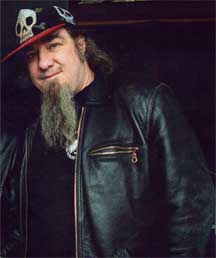

He has amassed a huge day-by-day visual history of the area, told mainly through unpretentious portraits of its myriad and diverse faces: tenement kids and homeless people, poets and politicians, drug dealers and drag queens, rabbis and santeros, beat cops, graffiti taggers, hookers, junkies, punks, anarchists, mystics and crackpots.
He has also published two well-received anthologies: ''Captured: A Film/Video History of the Lower East Side,'' 2005, and "Resistance: A Radical Political and Social History of the Lower East Side," 2007. Two more anthologies are in the works: "Jewish History of the Lower East Side," and "Tattoo and Body Art in New York City". A documentary on Patterson and the Lower East Side titled "Captured" by Dan Levin, Ben Solomon and Jenner Furst is seen much through Patterson's lens and will soon be premiered with screenings worldwide.
Canadian-born Clayton Patterson is a photographer, artist, outlaw historian, and community activist. He lives and works on the Lower East Side of New York City. Patterson has created an extensive and always expanding photo and video archive of the Lower East Side. His photographs are unequaled in its power to portray the people and times of a unique neighborhood that has become synonymous with American underworlds and subcultures. Patterson is a street photographer in the tradition of Weegee and Gary Winogrand, but his project is so life-encompassing that it is perhaps more akin to some outsider or conceptualist obsessively documenting one's environs.
He photographed the 1988 Tompkins Square police riots (and has been arrested more than a dozen times for photographing the police), and he was at the closing concert of CBGB's in 2007. The New York Times describes Patterson's endeavor as such:
13th Street Pre-attack 1996
photo by Clayton Patterson